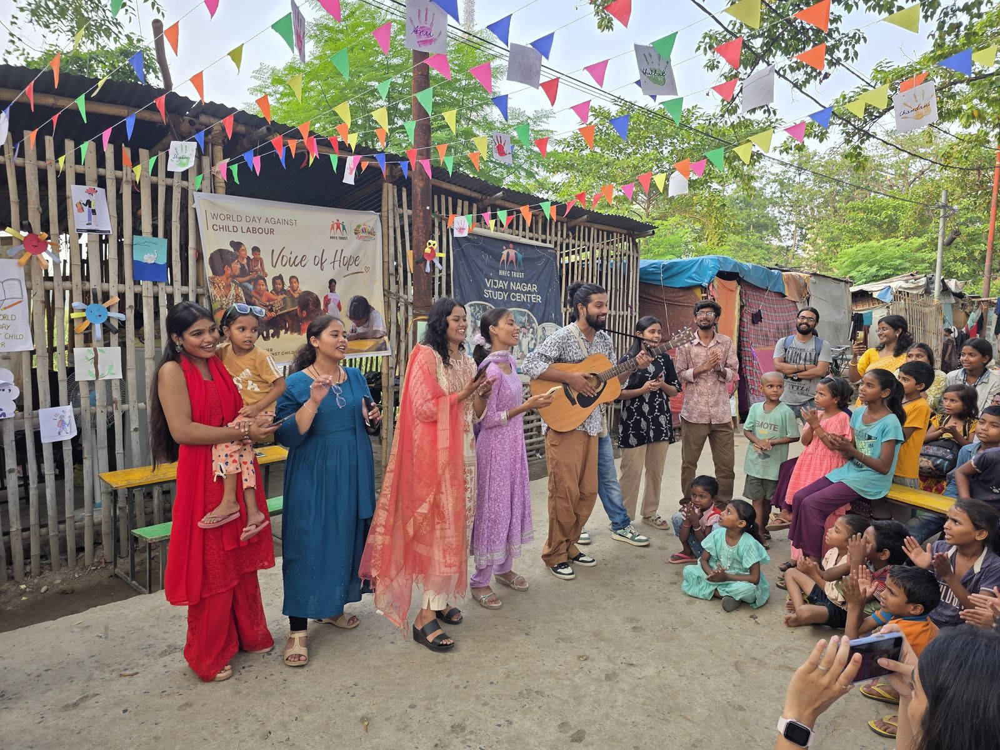
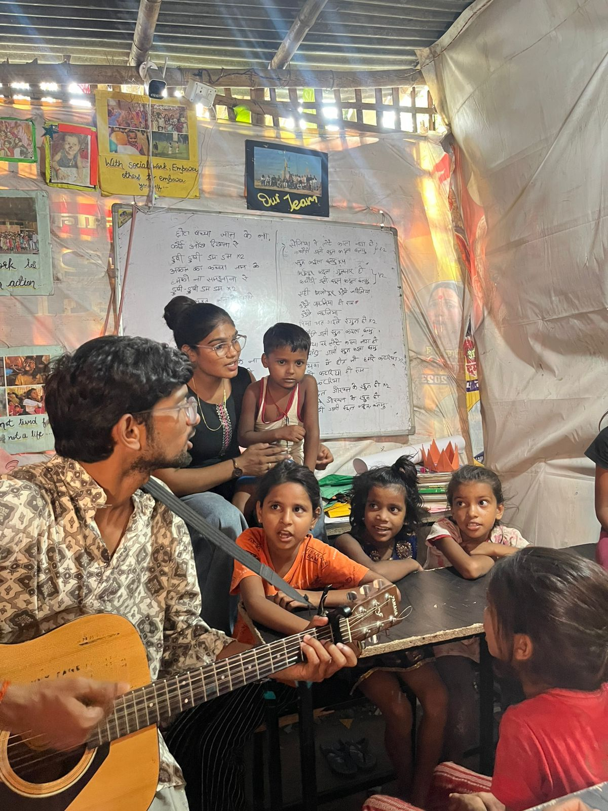

Culture is not decoration. It is how a child learns to be heard.
Gramotsav Foundation is a Section 8 non-profit company based in Patna, Bihar. We preserve and carry forward the folk traditions of rural and indigenous India, and we use those traditions as a living medium for learning, confidence and dignity — especially for children whom conventional classrooms leave behind.

Audio-first music
Instrument teaching that does not depend on sight or notation — built on listening, demonstration, rhythm, repetition and hands-on practice.

Bhojpuri, Maithili, Magahi
Regional song, oral storytelling and traditional instruments brought back into the room, so children learn their own culture as something to be proud of.

Skill to opportunity
We introduce music as a possible pathway — performance, teaching, recording, ensemble work — not a promise of a job, but an honest view of what practice can open.